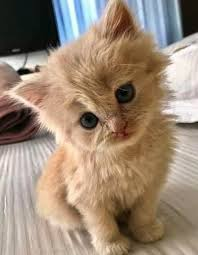

Pochi the Cat
Introduction
pochi was adopted from an animal shelter and now resides in Seattle. WA, where
she runs a small but successful webpage design business exclusively for cat clients
Profile
- favourite food - smaked salmon
- hobbies - watching fishing on ESPN, snacking on garden flowers, monitoring the apartement parking lot
- hidden talent - karoke
Links
